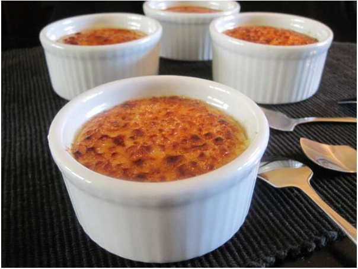

Creme Burlee

Ingredients
- 2 cups heavy cream
- ¼ cup white sugar
- 1 pinch salt
- 1 teaspoon vanilla extract
- 3 egg yolks
- 4 tablespoons white sugar
Steps
- Preheat oven to 300 degrees F (150 degrees C) and line the bottom of a large baking pan with a damp kitchen cloth.
- Bring a large pot of water to boil. While water is boiling, combine cream, 1/4 cup sugar and salt in saucepan over medium heat. Stir occasionally 4 to 5 minutes, until steam rises. In a medium bowl, beat egg yolks and vanilla until smooth. Pour hot cream into yolks, a little at a time, stirring constantly, until all cream is incorporated. Pour mixture into four 6 oz. ramekins.
- Place ramekins on towel in baking dish, and place dish on oven rack. Pour boiling water into dish to halfway up the sides of the ramekins. Cover whole pan loosely with foil.
- Bake 25 to 30 minutes in the preheated oven, until custard is just set. Chill ramekins in refrigerator 4 to 6 hours.
- Before serving, sprinkle 1 tablespoon sugar over each custard. Use a kitchen torch or oven broiler to brown top, 2 to 3 minutes.
Home